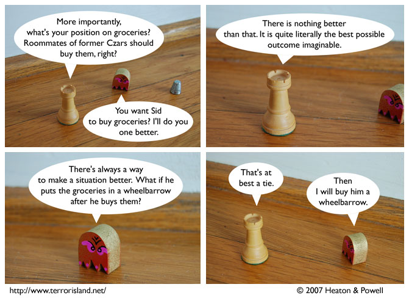

Strip #239
— Friday, December 21, 2007
Blueteen is a wise and learned Czar.
Notes, Thoughts, &c.
Ben’s Notes
Blueteen was introduced because we felt the cast needed a more helpful member.
Lewis’s Notes
While I don’t agree that every situation admits of improvement by the addition of a wheelbarrow, I will say that no matter how bad any particular situation is, it is definitely made worse by a headache. Situations that already have headaches in them are made worse by increasing the intensity of the heading, or adding a second type of headache to the mix.